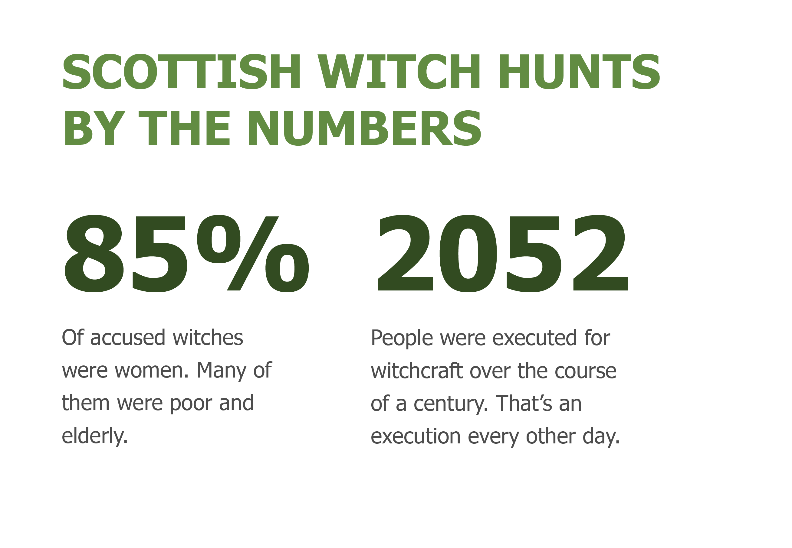

Marion Veitch's grandson had died, and soon so would she.
She was put to death after confessing to the murder of her grandson, which records from the School of History and Classics at The University of Edinburgh in Scotland say was a result of the devil coercing her. Veitch was accused of several things at the time of her trial -- including turning into a bee with several other witches.
Veitch, was one of the more than 3200 people from Scotland who fell victim to a 180-year witch hunt. The accusations fell mostly on women. The records included all sorts of crimes for them to eventually be found guilty of -- conjuring an image of a man before a drunken stablehand.
Among the most targeted were poor people were quite literally poor, old women, according to BBC's history magazine, HistoryExtra. They were alone in society because they had often been widowed and taken to begging on the streets for survival.
The scare reached its peak in the 1660s, and in 1649, there was a total of 367 accusations, putting the rate at a rate of one accusation per day.
236 Accusations
47 Accusations
95 Accusations
378 Accusations
235 Accusations
588 Accusations
384 Accusations
647 Accusations
149 Accusations
34 Accusations
That century wasn't just the busiest for accusations -- It was also the bloodiest.
The small country had an execution rate of about 67 percent. However, skepticism had started to grow around the 1670s, and accusations took a drastic drop from the year before.
Julian Goodare, Lauren Martin, Joyce Miller and Louise Yeoman, 'The Survey of Scottish Witchcraft', www.shc.ed.ac.uk/witches/ (archived January 2003, accessed 'April 25').